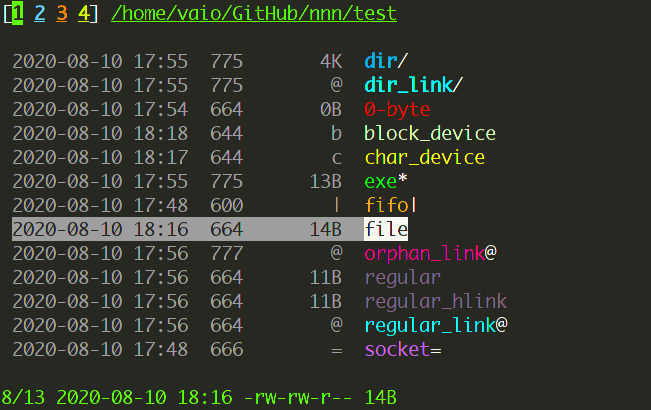
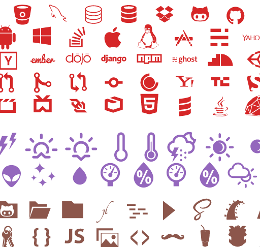

Rest assured that you won't be having trouble learning and configuring nnn. The documentation consists of over 70 sections detailing most of the aspects and use-cases you might need to know. Here are some links to get you started:
Desktop only
Looks like you're on a phone, so you probably don't need this program. It's made for desktop power-users, and specifically Linux users. You can still check out this cool page!nnn
A terminal file manager for the power user.
Full-featured, tiny, nearly 0-config and incredibly fast (even faster than ls).
It is designed for workflows that match the train of thought.

Explore the features

Customize colors...

Icons...
And fonts, all using the power of your terminal.
Contexts (aka tabs/workspaces)
Search and sort
Desktop opener
Watch short demos...

File previews

Colors and icons

Opening a folder with 70k files